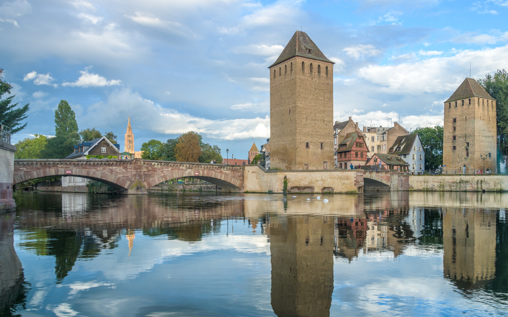

Le programme des quatre jours
45e anniversaire de la promotion X77 à Strasbourg, du jeudi 8 au dimanche 11 septembre 2022

Jour 1 Jeudi 8 septembre
Premier rendez-vous de la promotion et des conjoints, pour ceux arrivés dès le jeudi.
Jour 2 Vendredi 9 septembre
Rencontre avec Mattias Guyomar, juge à la Cour. Sur le parvis, « les droits de l'Homme selon… le Chat » de Philippe Geluck.
Avec Marie Fontanel et Rafael Benitez.
Avec Fabienne Keller, députée européenne.
Une visite passionnante et musicale avec le père Xibaut.
La vieille ville vue de l'Ill, puis le dîner de promotion à la Maison Kammerzell, au pied de la cathédrale.
Jour 3 Samedi 10 septembre
Un très beau village alsacien.
Des explications viticoles suivies avec attention.
Une soirée particulièrement animée.
Jour 4 Dimanche 11 septembre
Près de cent d'entre nous autour de notre camarade Luc Ravel, alors archevêque de Strasbourg.
Plusieurs parcours avec des conférencières : la cathédrale et l'ancienne résidence épiscopale, la Petite France…
Une merveilleuse réception dans la résidence de Luc.
Photos : Tristan de Viaris et Patrick Tejedor.
Programme reconstitué à partir des messages des kessiers et du « Petit souvenir » ; les sites internet de l'anniversaire ne sont plus en ligne.